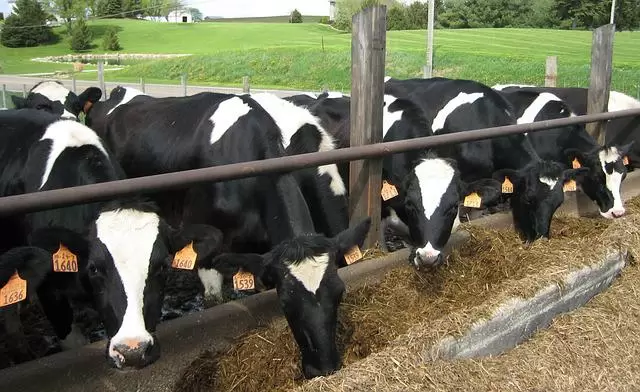
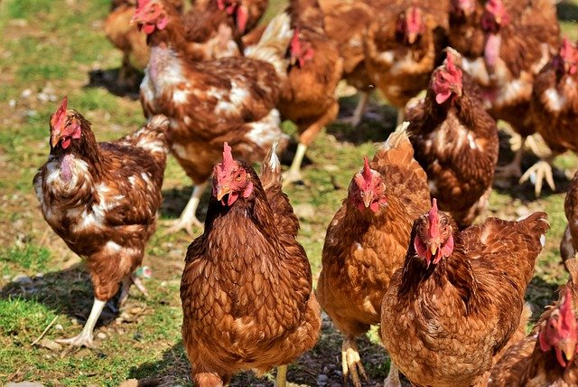

Cattle
Our Services
Through our rigid selection process, health testing, final inspection and follow up service we aim to provide superior service both before and after shipment to guarantee a satisfied customer. No matter what size genetic purchase you wish to export, MA Poultry & Livestock can assist. We work with our clients to ensure a smooth and successful shipment. MA Poultry & Livestock Centre is an SQIS approved isolation Centre owned and operated by us. Operating our own pre isolation facility means we can process any international livestock order totally in house making the process less complicated and more cost effective for you the client
Poultry
What We Offer
- Blooding Services
- Transport & Logistics
- Hatching
- Poultry Products
- Diary Products
Sheep & Goat

Our Animals & Products
- Cattle
- Hens
- Sheep & goat